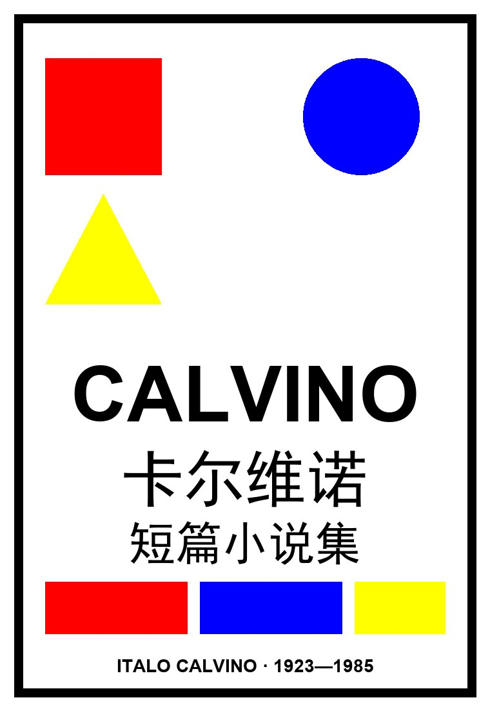

Italo Calvino · Racconti
卡尔维诺
短篇小说集
四卷"艰难的"故事——田园诗、记忆、爱情、生活。卡尔维诺让他的故事自己说话，把我们期待的东西缄口不语。
后现代寓言几何
轻逸1923—1985

第一版《短篇小说集》于 1958 年由埃伊纳乌迪出版，卡尔维诺将此前散落的短篇归拢成四卷：收录《乌鸦最后来》(1949) 几乎所有小说、《进入战争》(1954) 三个自传性故事、马科瓦尔多的前十个故事、"艰难的爱"系列九次奇遇，以及杂志上的三部短小长篇与零散短篇。
处女作《通向蜘蛛巢的小径》(1947) 以游击队员皮恩的视线写战争；马科瓦尔多系列让城市小工用异于常人的眼睛捕捉蘑菇生长、候鸟迁徙的诗意；"艰难的爱"以九次"奇遇"把日常写成现代寓言。
在这四卷里，卡尔维诺让故事自己说话，对我们期待的东西缄口不语，让我们独自去解决犹疑、去聆听生命不息的节奏。
父母都是热带植物学家，卡尔维诺自幼与大自然密不可分，少年浸染书本、漫画与电影。二战期间他参加游击抵抗，1947 年从都灵大学文学院毕业，进入艾依那乌迪出版社任文学顾问。
他隐居巴黎十五年，与列维-施特劳斯、罗兰·巴特、格诺等交往密切。1985 年夏天准备哈佛讲义（即《美国讲稿 / 未来千年文学备忘录》）时患病猝逝，与当年的诺贝尔文学奖失之交臂。
| 篇目 / 系列 | 特征与名句 |
|---|---|
| 通向蜘蛛巢的小径 | 处女作（1947），以游击队员皮恩的童眼写战争、英雄主义与历史。 |
| 城市里的蘑菇 / 市政府的鸽子 / 高速公路上的森林 | 马科瓦尔多系列：城市小工对都市的诗意观察。 |
| 阿根廷蚂蚁 / 烟云 | "艰难的爱"系列：日常里的荒诞与奇遇。 |
| 进入战争 | 三个自传性故事，回望少年与战争的碰撞。 |
| 自序 | "文学的话题永远只有一个：那就是有关世界现实，有关隐秘规律、图案、生命节奏的话题。" |
| 年份 | 出版社 | ISBN |
|---|---|---|
| 1958.11 | 都灵·埃伊纳乌迪（原版初版） | — |
| 2010.4 | 译林出版社（卡尔维诺经典，马小漠译） | 9787544712682 |
| 2012 | 译林出版社（精装双封） | 9787544722261 |
卡尔维诺以特有的方式反映了时代，更超越了时代。他在《美国讲稿》中系统阐发的轻逸、精确、可视性、繁复美学主张，成为当代小说技艺的灯塔；与《我们的祖先》三部曲、《看不见的城市》《命运交叉的城堡》等共同构筑起一座世界文学经典之塔，深远影响了全球范围内的作家与读者。
想读完整作品？可在微信读书搜索并阅读《卡尔维诺短篇小说集》全文：
📖 微信读书 · 阅读《卡尔维诺短篇小说集》